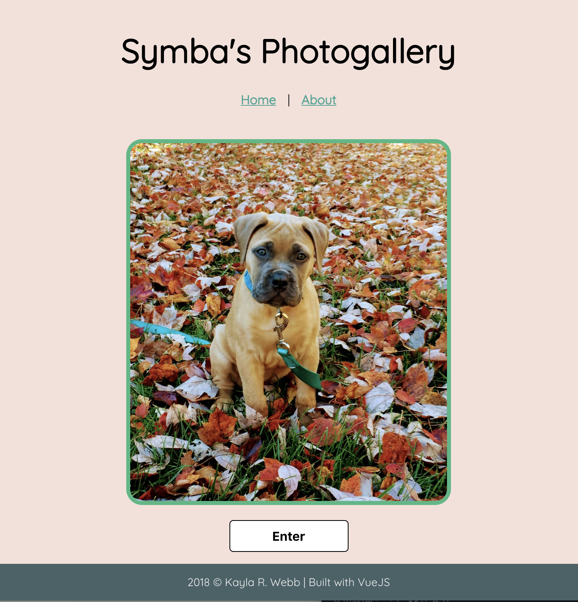

- Symba's Gallery
- Learn CrossFit Lingo!

- Work Example
Hey, I'm Kayla, and I build things on you can use on the web. I was formally trained in the MERN stack (MongoDB, Express, React, Node) in Thinkful's 5-month Engineering Immersion program, but I'm willing and excited to explore other technologies! My journey to this point has been quite unconventional - I graduated from Howard University in 2013 with a degree in political science and my plan was to go to law school, but I ended up doing policy and legislative work. After a brief stint in journalism, I became obsessed with data, particularly federal legislative data and the intracacies of legislative procedure. I learned SQL and helped the developers in my day-to-day with building tools to help government affairs professionals do their jobs. Experienced in the agile methodology and scrum, I strongly believe in effective communication, being flexible in the development process, and always putting users first. During the engineering bootcamp, I immersed in coding 50-60 hours a week for 5 months, and it has thus far been the hardest thing I’ve ever done in my life. I truly believe it has made me a better teammate (we pair programmed everyday!), a more effective communicator, and a better person in general. After graduating, I joined the engineering team at Bloomberg Government in Washington D.C. Though I love to dabble in everything, my day-to-day primarily consists of building applications using Vue.js on the front-end and Ruby on Rails on the server. When I’m not coding, I’m usually at the gym - I’m a competitive weightlifter and Crossfitter - or I’m playing with my dog. Have a look around and hit me up if you have any questions. Thanks for reading!